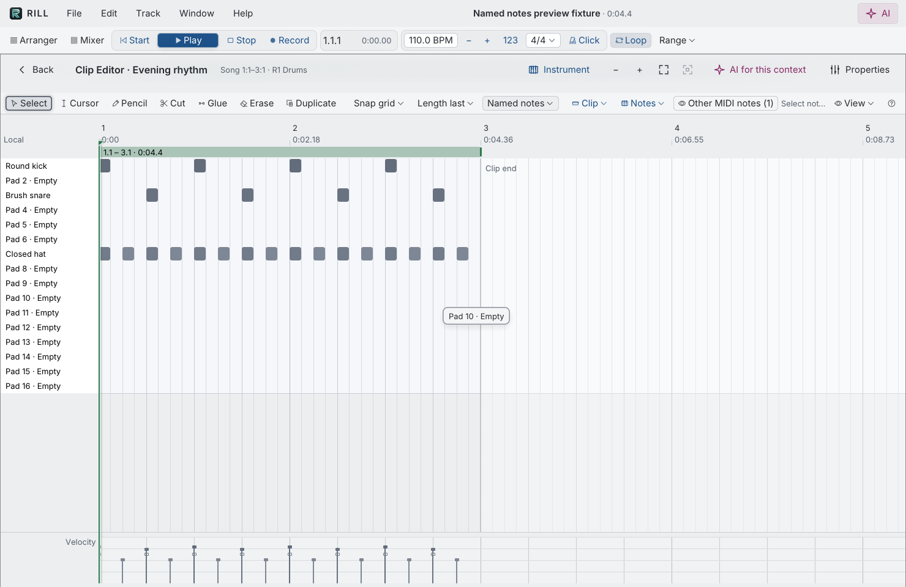
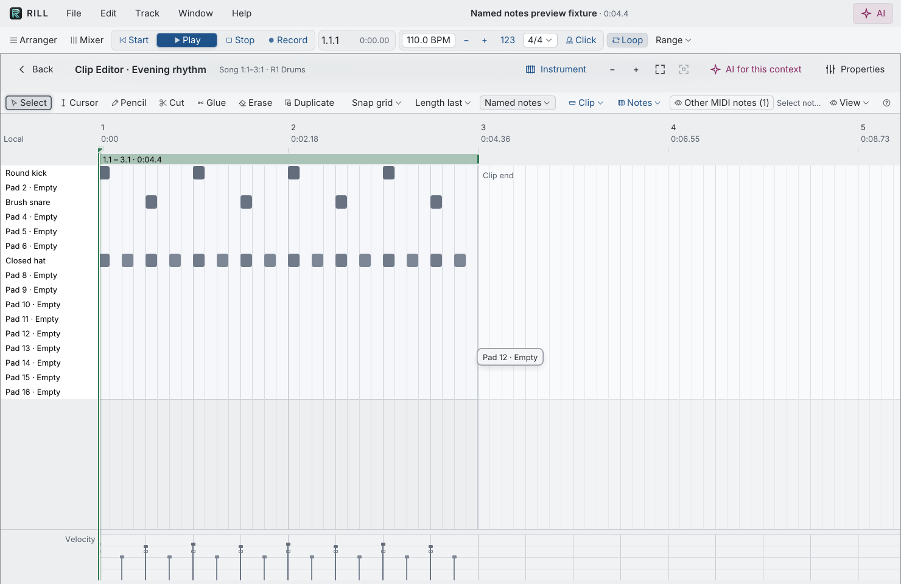
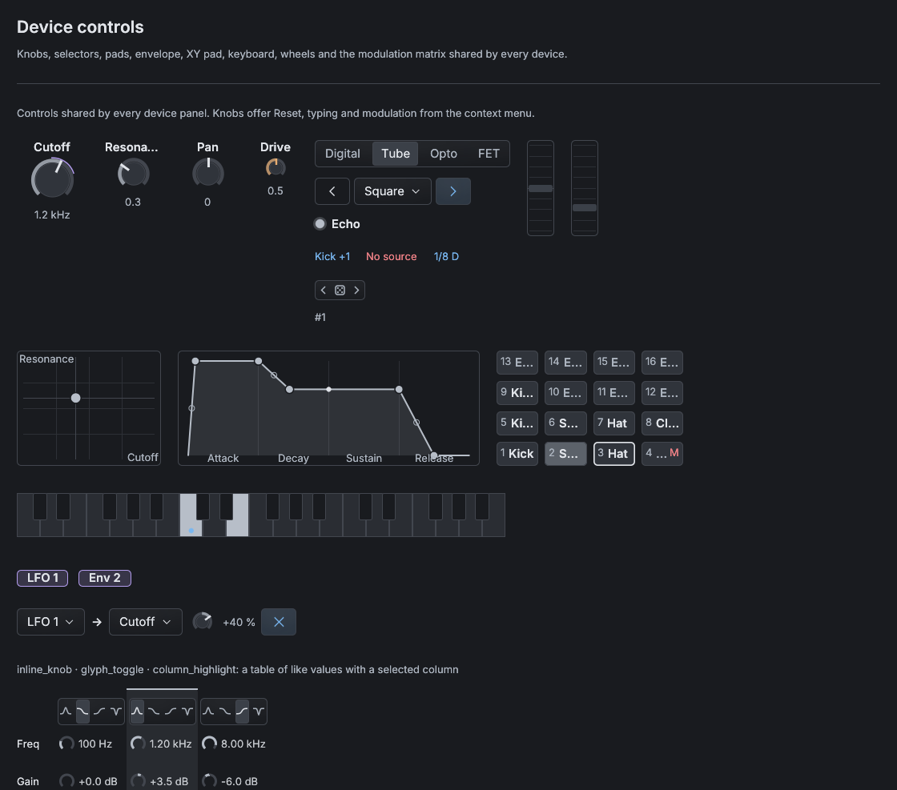
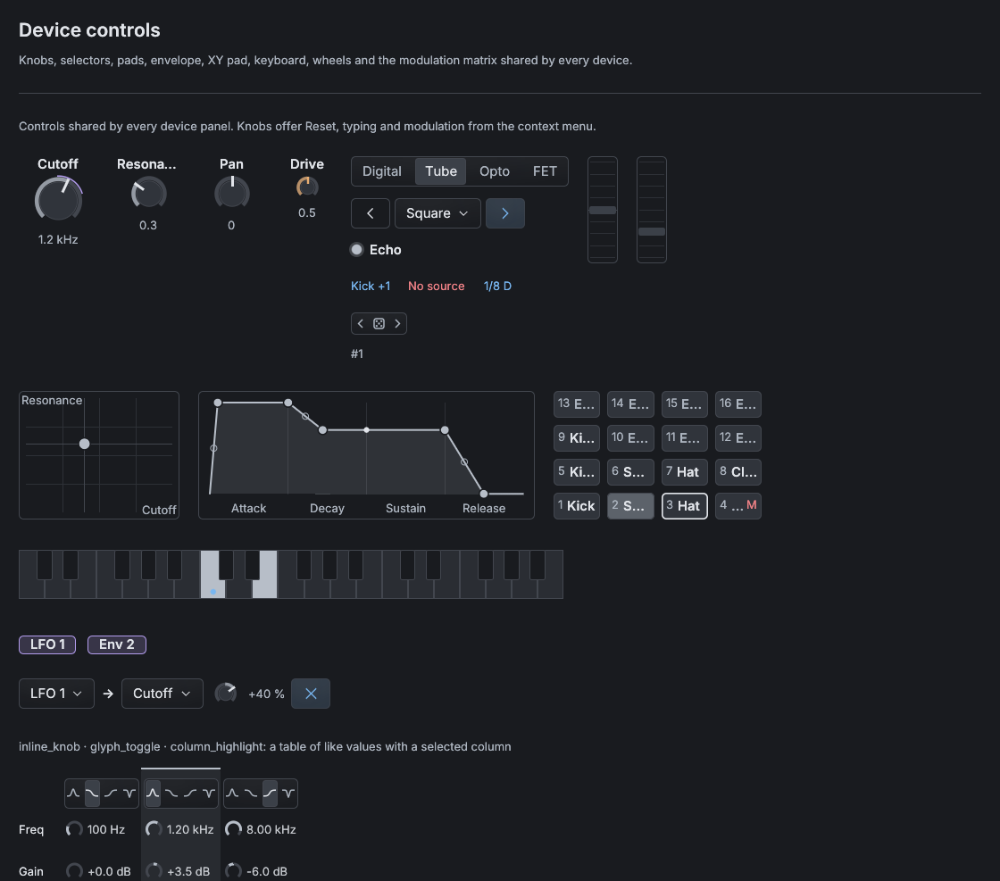
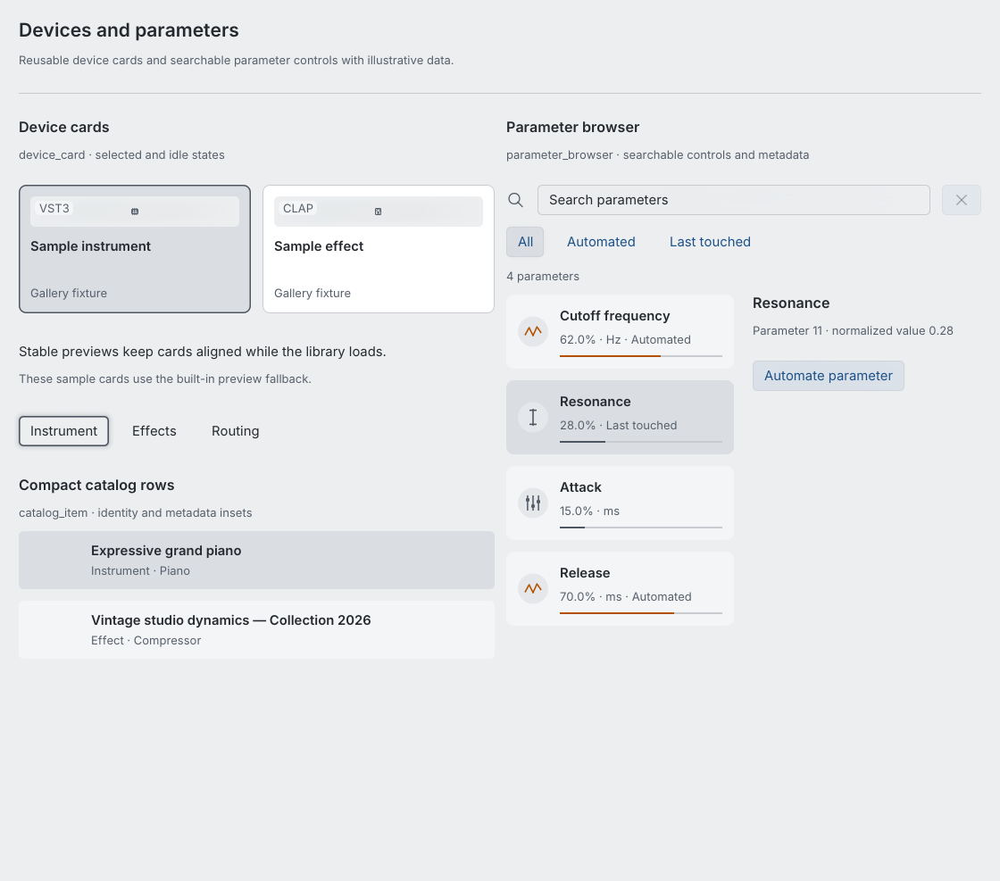
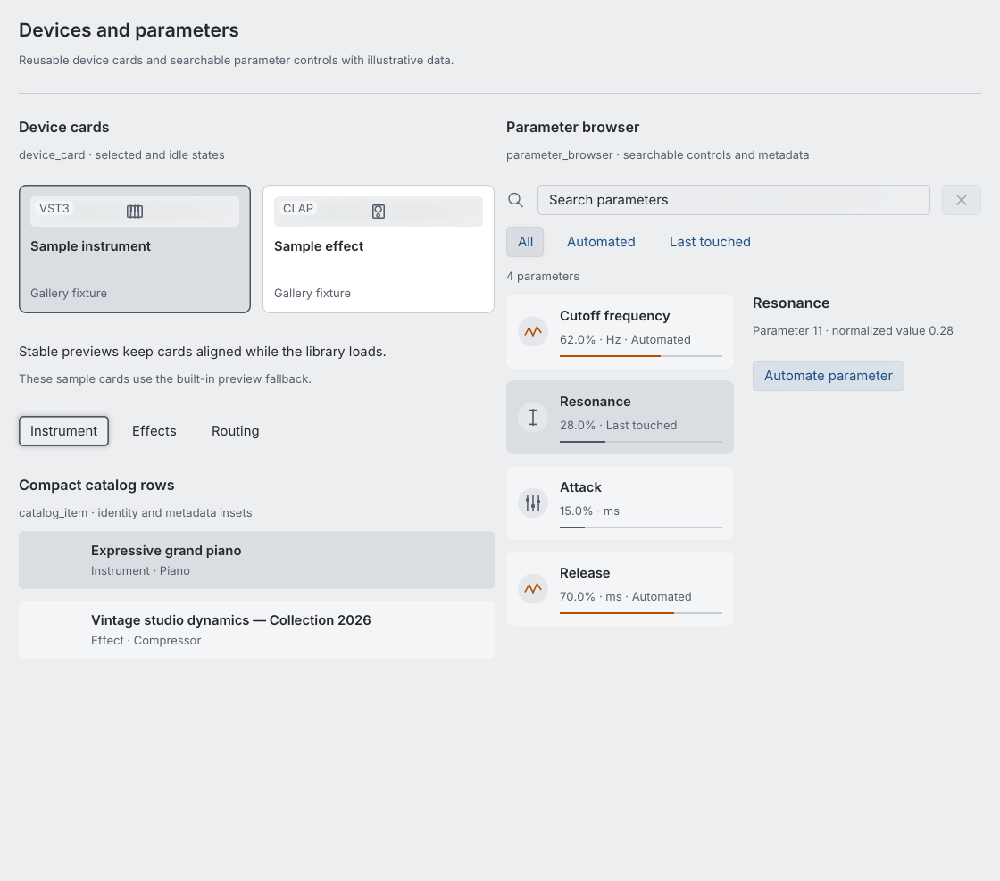
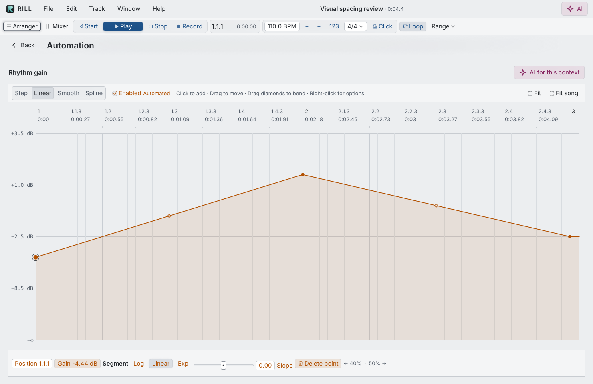

Actual application and shared-component screenshots. Updated toolbar tooltips explain actions and unavailable states. Compact controls, wrapping, and hover behavior are covered by automated checks.
The time label keeps its position; 13 px below it separates the cursor and loop ribbon.


The Release caption has its own space below the curve and endpoint.


Short preview cards keep a readable icon instead of shrinking it to a few pixels.


Segmented choices use the compact toolbar height alongside the neighboring controls.

Full findings · Verification record · 1100 px named-note editor · 1100 px audio editor · 1100 px mixer